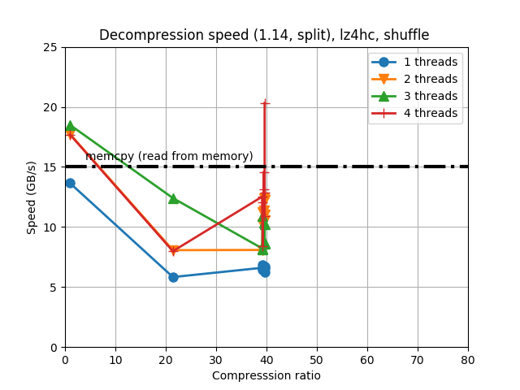
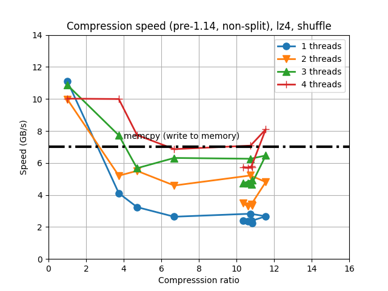
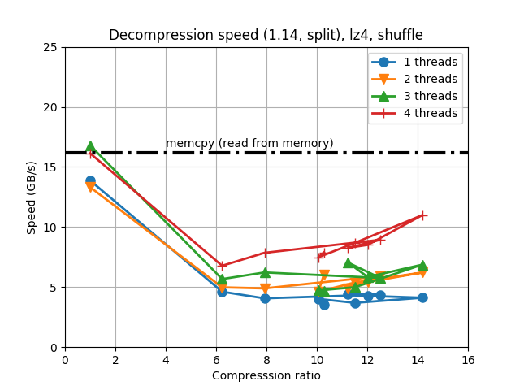

New Forward Compatibility Policy
The #215 issue
Recently, a C-Blosc user filed an issue describing how buffers created with a modern version of C-Blosc (starting from 1.11.0) were not able to be decompressed with an older version of the library (1.7.0), i.e. C-Blosc was effectively breaking the so-called forward-compatibility. After some investigation, it turned out that the culprit was an optimization that was introduced in 1.11.0 in order to allow better compression ratios and in some cases, better speed too.
Not all the codecs inside C-Blosc were equally affected; the ones that are experiencing the issue are LZ4, LZ4HC and Zlib (quite luckily, BloscLZ, the default codec, is not bitten by this and should be forward compatible probably til 1.0.0); that is, when a user is using a modern C-Blosc library (> 1.11.0) and is using any of the affected codecs, there are situations (namely when the shuffle or bitshuffle filter are active and the buffers to be compressed are larger than 32 KB) that the result cannot be decompressed with older versions (< 1.11.0).
Why this occurred?
Prior to 1.11.0, Blosc has traditionally split the internal blocks (the different pieces in which the buffer to be compressed is divided) into smaller pieces composed by the same significant bytes that the shuffle filter has put together. The rational for doing this is that these pieces are, in many cases, hosting values that are either zeros or very close byte values (this is why shuffle works well in general for binary data), and asking the codec to compress these split-blocks separately was quite less effort than compressing a complete block hence providing more speed).
However, I realized that the so-called High Compression Ration codecs (the HCR codecs inside BLosc are LZ4HC, Zlib and Zstd) generally benefited from this split not happening (the reason is clear: more data means more opportunities for finding more duplicates) and in some cases, the speed was better too. So, in C-Blosc 1.11.0, I decided that the split was not going to happen by default for HCR codecs (in the last minute I decided to include LZ4 too, for which the experiments showed a noticeable performance bump too, see below). Fortunately, the Zstd codec was introduced (in an out-of-beta way) at the very same 1.11.0 release than this split-block change, so in practice data compressed with the Zstd codec is not affected by this.
New forward compatibility enforcement policy
Although this change was deliberate and every measure was put in making it backward compatible (i.e. new library versions could read buffers compressed with older versions), I was not really aware of the inconveniences that the change was putting for people creating data files using newer versions of the library and expecting these to be read with older versions.
So in order to prevent something like this to happen again, I decided that forward compatibility is going to be enforced for future releases of C-Blosc (just for 1.x series; C-Blosc 2.x should be just backward compatible with 1.x). By the way, this new forward compatibility policy will require a significantly more costly release procedure, as different libraries for a specific set of versions have to be manually re-created; if you know a more automatic way to test forward compatibility with old versions of a library, I'd love to hear your comments.
Measures taken and new split mode
In order to alleviate this forward incompatibility issue, I decided to revert the split change introduced in 1.11.0 in forthcoming 1.14.0 release. That means that, by default, compressed buffers created with C-Blosc 1.14.0 and on will be forward compatible with all the previous C-Blosc libraries (till 1.3.0, which was when support for different codecs was introduced). That is, the only buffers that will pose problems to be decompressed with old versions are those created with a C-Blosc library with versions between 1.11.0 and 1.14.0 and using the shuffle/bitshuffle filter in combination with the LZ4, LZ4HC or Zlib codecs.
For fine-tuning how the block-split would happen or not, I have introduced a new API function, void blosc_set_splitmode(int mode), that allows to select the split mode that is going to be used during the compression. The split modes that can take the new function are:
BLOSC_FORWARD_COMPAT_SPLIT
BLOSC_AUTO_SPLIT
BLOSC_NEVER_SPLIT
BLOSC_ALWAYS_SPLIT
BLOSC_FORWARD_COMPAT_SPLIT offers reasonably forward compatibility (i.e. Zstd still will not split, but this is safe because it was introduced at the same time than the split change in 1.11.0), BLOSC_AUTO_SPLIT is for nearly optimal results (based on heuristics; this is the same approach than the one introduced in 1.11.0), BLOSC_NEVER_SPLIT and BLOSC_ALWAYS_SPLIT are for the user interested in experimenting for getting best compression ratios and/or speed. If blosc_set_splitmode() is not called, the default mode will be BLOSC_FORWARD_COMPAT_SPLIT.
Also, the user will be able to specify the split mode by using the BLOSC_SPLITMODE variable environment. If that variable exists in the environment, and has any value among:
'BLOSC_FORWARD_COMPAT_SPLIT'
'BLOSC_AUTO_SPLIT'
'BLOSC_NEVER_SPLIT'
'BLOSC_ALWAYS_SPLIT'
this will select the corresponding split mode.
How this change affects performance
So as to allow to visualize at a glance the differences in performance that the new release is introducing, let's have a look at the impact on two of the most used codecs inside C-Blosc: LZ4 and LZ4HC. In the plots below the left side is the pre-1.14.0 version (non-split blocks) and on the right, the forthcoming 1.14.0 (split blocks). Note that I am using here the typical synthetic benchmarks for C-Blosc, so expect a different outcome for your own data.
Let's start by LZ4HC, a High Compression Ratio codec (and the one that triggered the initial report of the forward compatibility issue). When compressing, we have this change in behavior:
|
|


For LZ4HC decompression:
|
 |

For LZ4HC one can see that, when using non-split blocks, it can achieve better compression ratios (this is expected, as the block sizes are larger). Speed-wise the performance is quite similar, with maybe some advantage for split blocks (expected as well). As the raison d'être for HCR codecs is maximize the compression ration, that was the reason why I did the split change for LZ4HC in 1.11.0.
And now for LZ4, a codec meant for speed (although it normally gives pretty decent results in compression ratio). When compressing, here it is the change:
 |
|

For LZ4 decompression:
|
 |

So, here one can see that when using Blosc pre-1.14 (i.e. non-split blocks) we are getting a bit less compression ratio than for the forthcoming 1.14, which even if counter-intutive, it matches my experience with non-HCR codecs. Speed-wise the difference is not that much during compression; however, decompression is significantly faster with non-split blocks. As LZ4 is meant for speed, this was possibly the reason that pushed me towards making non-split blocks by default for LZ4 in addition to HCR codecs in 1.11.0.
Feedback
If you have suggestions on this forward compatibility issue or the solution that has been implemented, please shout!
Appendix: Hardware and software used
For reference, here it is the configuration that I used for producing the plots in this blog entry.
CPU: Intel Xeon E3-1245 v5 @ 3.50GHz (4 physical cores with hyper-threading)
OS: Ubuntu 16.04
Compiler: GCC 6.3.0
C-Blosc: 1.13.7 and 1.14.0 (release candidate)
LZ4: 1.8.1